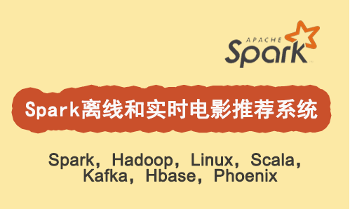

基于知名视频网站电影推荐项目进行讲解，快速提升Spark 机器学习推荐项目经验。本课程从Spark离线推荐和实时推荐两个方面剖析电影推荐项目，使用技术包含 hadoop、hive、spark、kafka、zookeeper、hbase、phoenix、ZEPPELIN等

链接详情：http://www.dajiangtai.com/course/56.do
1. 课程介绍
推荐系统是电商和内容型app网站生存的重要手段，是以重新组织物品分类和聚类方式形成的人工智能系统。亚马逊的商品推荐、优酷的视频推荐，都是推荐系统的应用实例。每一个具体的应用场景中推荐系统表现形式有所不同，但是最终都是以增加内容、商品曝光度为前提的。
推荐系统根据每一个用户的行为和喜好，找到这个用户未来可能喜欢和购买的商品或者是物品。它使得内容、电商两大产业减少了大量的人工编辑推荐的工作，只需要用一些简单或者深入的算法，就可以达到很好的效果。
课程内容：
本课程包括推荐引擎、推荐算法、推荐环境三大版块，课程中会讲解在线教育、视频网站、电商购物、阅读网站四个领域的知识点和实战案例。
2. 课程视频及源码获取联系方式
收集整理了人工智能和大数据方面的项目实战类的视频教程，需要视频请加微信（BigDataAI007） 如本站没有您想要的视频，请微信联系，可以帮您拿到课程。

2.1 项目总体介绍和背景
项目总体介绍和背景
a.基于Spark流行的大数据工具，开发一套电影推荐系统，让大家体验到如何实现自己的“猜你喜欢”的推荐。 很多电商和购物网站以及一些手机上的应用，猜你喜欢已经成为了必备功能，它对网站的销售有着很明显的刺激作用。
技术框架
a.大数据工具的选择，包括HDFS、HIVE、SPARK、KAFKA、HBASE、PHOENIX、ZEPPELIN等工具。
b.推荐的实时性，包括实时推荐和离线推荐。
系统要求以及开发的重点和难点
a. 完成一个推荐系统，为每个用户产生合适的电影产品的推荐结果。并且满足在性能，可靠性上的要求。
b. 实时数据的产生以及打到kafka消息队列中。
c. 对数据特征的发掘、清洗和加工。
d. 产生推荐系统的模型，并在多个模型中选择最佳的模型。
e. 解决整个系统中的性能问题。
2.2 数据特点分析、清洗、加工成表和数据集的准备
a. 介绍各个文件的作用以及用户和电影的各个属性
b. 分析数据区间、特点
c. 探讨开发的思路
a. 构建RDD
b. 定义各个表对应的case class
c. 将RDD转换成DATAFRAME
d. 在sparksql中创建对应的表
e. 通过sparksql做一些查询来验证
2.3 离线推荐模块的开发
1、数据加工，整理出rating
a. 通过一系列的数据转换形成rating数据
2、依据ratings构建模型
a. 构建模型
3、理论补充 a. ALS算法的介绍
4、最佳参数的寻找 a. 评估模型好坏的指标RMSE
b. 模型相关的参数
c. 如何寻找最好的模型
5、离线推荐 a. 依据输入的某个用户ID，加载模型，产生推荐的电影结果，写入到数据库中
b. 依据输入的某个电影，加载模型，给出可能喜欢的用户
2.3 Kafka+spark Streaming实时推荐模块的开发
1、构建实时数据流 a. 将ratings表里的数据通过模拟的方式打入到kafka的消息队列中。
2、在sparkstreaming中接收kafka消息队列中的数据，开发实时数据处理模块 a. 在sparkstreaming通过direct的方式来接收kakfa中的数据，然后加载已经存在的模型，实时生成推荐结果，写入到数据库中。
3、新用户或者未登录用户 a. 推荐策略的推想，以及实现用户的推荐。